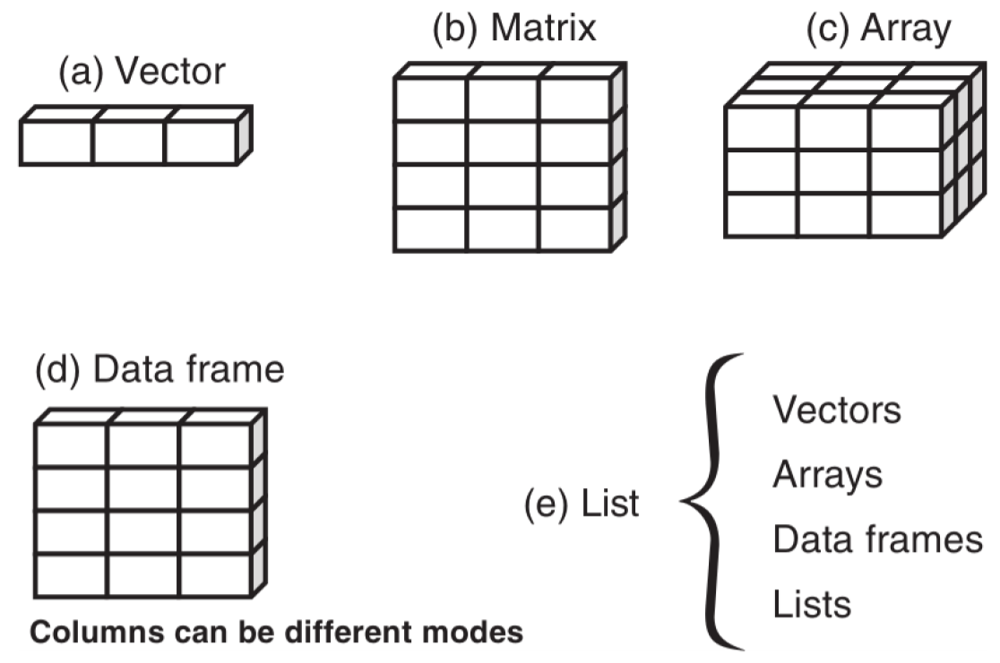

Data structures, functions, packages and the RStudio environment
Running code in the browser
The workshop uses executable code chunks in the browser via WebR. Press to run the code!
Setting variables
If the code fails to run or throws up an error, it is most likely because it relies upon variables that were set in a previous chunk which were not run. Please make sure that you run all of the chunks in order! Refreshing the browser will also reset everything!
R is a powerful open-source programming language and software environment primarily designed for statistical computing, data analysis, and graphical visualization. R has its own interface; when you install R onto your own computer(Windows/Mac) you can open R on it’s own. However, working in this way with R (‘base R’) isn’t very user friendly!
Instead, we use an IDE (Integrated Development Environment) to work with the R programming language. A popular example - and the one that we will be using - is RStudio.
Script editor: Where you write and edit your R code
Console: Where you run R commands and see their output
Environment/History: Shows your workspace variables and command history
Files/Plots/Packages/Help: A multi-purpose pane for viewing files, plots, managing packages, and accessing help documentation
You can check your versions of both R and RStudio using the following commands:
R.version
_
platform x86_64-apple-darwin20
arch x86_64
os darwin20
system x86_64, darwin20
status
major 4
minor 4.1
year 2024
month 06
day 14
svn rev 86737
language R
version.string R version 4.4.1 (2024-06-14)
nickname Race for Your Life
We will now cover some basic operations and values within R.
Calculator Functions
We can perform basic mathematical operations:
Special values
In addition to numbers, variables can also take on other values:
Data types, classes and variables
There are many types of data in R, here are some commonly used:
Checking your data type
You can check data types using the class command.
Numeric - Decimal and ‘whole’ numbers (the most common numeric type)
Character - Text data in quotes
Logical - Boolean values for conditional logic
Factor - a data type for categorical variables with fixed levels (categories).
In the example below, we create a vector of letters, some of which are repeated. However, the levels within are limited to each individual letter.
Storing and manipulating variables
We commonly assign numbers and data to variables, which we can then compute directly:
Case sensitivity
R is case sensitive, so X and x are not the same object!
Data structures
R offers several data structures that serve different purposes. Each structure is designed to handle specific types of data organization, from simple one-dimensional vectors to complex nested lists2.

Here are some examples of each datatype:
Vector
One-dimensional sequence of elements
All elements must be of the same type (numeric, character, etc.)
Now let’s check the class of each vector:
Matrix and array
Two-dimensional (matrix) and three-dimensional (array) arrangement of elements
All elements must be of the same type
Organized in rows and columns
Let’s check the class of the matrix and array:
If you aren’t sure which type of data structure you are working with, whether it is an array, matrix or vector, you can use the is() function to check. This will return TRUE or FALSE depending on what the structure is.
You may have noticed that m1 is a matrix and an array, whilst arr is an array but not a matrix. This is because a matrix is essentially a three-dimensional array with one dimension set to 1.
Data frame
Two-dimensional structure similar to a spreadsheet
Different columns can contain different types of data
Most common structure for statistical analysis
Suppose we have a data frame of students’ grades and demographics:
Check the class of the dataframe and a column, and display the structure of the dataframe:
When working with dataframes, we often want to select specific columns. We can use the $ operator to do this.
Or we can use the [[ operator:
Either is fine, but you may find the $ operator is quicker and easier to use.
We can assign values within a specific column or row to a new variable:
But there are always lots of ways to do the same thing in R. For example, here are different ways by which we can extract all students who are male:
students[students$Gender =="M", ] # Basic subsettingsubset(students, Gender =="M") # using the subset() functionstudents %>%filter(Gender =="M") # using the filter() function from the dplyr package
Logical operators, control flow and functions
We commonly use logical operators in R to help make decisions in code and are essential in tasks like subsetting data, controlling loops, writing conditional statements, and filtering data.
Operator
Summary
<
Less than
>
Greater than
<=
Less than or equal to
>=
Greater than or equal to
==
Equal to
!=
Not equal to
!x
NOT x
x | y
x OR y
x & y
x AND y
Some examples using the students dataframe:
Basic statistical functions in R
We can also perform basic statistics and operations on variables, such as getting the variance, standard deviation and summary statistics. You can do this using built-in functions in R including var(), sd(), sum(), mean(), min(), and max().
Miscellaneous commands
Here are some other commands that will be useful when working with R more generally:
Directory and Workspace Management
The setwd() command sets the working directory, which is the folder where R looks for files to read and where it saves output files. You can check your current working directory using getwd(). It is important to set your working directory appropriately, otherwise, you may run into issues when trying to read or write files, or source functions from other scripts.
getwd() # Get current working directorysetwd("your/path/here") # Set working directory to your pathdir() # List files in current directory
Path management with here
A useful package to use for directory management is here. This package allows you to set your working directory relative to the location of your project root, which is particularly useful when sharing scripts with others, as it avoids hard-coded paths.
Instead of of manually setting the working directory, and using hard-coded paths:
# Hard-coded paths that break on different computerssetwd("C:/Users/YourName/Documents/Project") # Windowssetwd("~/Documents/Project") # Unix/Mac# Reading files with relative paths (after setwd)data <-read.csv("data/mydata.csv")source("scripts/analysis.R")
You can use here:
# Install and load install.packages("here")library(here)# Check where 'here' thinks the project root ishere()#> [1] "/Users/username/Documents/MyProject"# Reading files with heredata <-read.csv(here("data", "mydata.csv"))results <-read.csv(here("output", "results.csv"))source(here("scripts", "analysis.R"))
Environment Management
The ls() command lists all objects in the current workspace. You can remove specific objects using rm(), or clear the entire workspace with rm(list = ls()). This is useful for cleaning up your environment before starting a new analysis.
# List objects in workspacels()# Remove all objects from workspacerm(list =ls())
Packages
Packages are collections of functions, data sets, and documentation bundled together to extend the functionality of R. They are not part of the base R installation but can be easily added and used in your environment.
R packages can:
Add functions: They contain pre-written functions that simplify common tasks or complex analyses. For example, packages like ggplot2 and dplyr offer powerful tools for data visualization and manipulation.
Provide data: Some packages include data sets that can be used for testing or teaching purposes. For example, the datasets package provides a collection of sample data sets.
Enable special features: Packages can implement specialized features like statistical models, machine learning algorithms, or tools for web scraping, reporting, and more.
Loading packages for this workshop
I have written ‘hidden’ code which automatically installs and then loads in the packages needed for this workshop everytime the browser is refreshed. However you would need to write code to load packages in the RStudio environment when writing your own scripts.
How to use packages in R
Installing: You can install a package from CRAN (the Comprehensive R Archive Network) using the install.packages() function.
install.packages("ggplot2")
Loading: Once installed, you can load the package into your R session with the library() function.
library('ggplot2')
Usage: After loading the package, you can use its functions. For example, with ggplot2, you can create a plot like this:
::: {.callout-note, title=“Sourcing packages”} Packages are hosted on several repositories, CRAN being the most common. Other repositories include Bioconductor (for bioinformatics) and GitHub. The install.packages() function installs packages from CRAN, while for GitHub packages, you can use the devtools or remotes package to install directly from a GitHub repository. :::
Popular R packages include:
ggplot2: A powerful package for data visualization based on the grammar of graphics.
dplyr: A package for data manipulation (filtering, selecting, grouping, etc.).
tidyr: Used for tidying data, such as reshaping and pivoting.
shiny: For building interactive web applications in R.
We will be using tidyverse - a collection of packages for data manipulation and visualization including dplyr, tidyr, and ggplot2 - in this workshop.
You can find and install R packages from a number of sources:
Bioconductor: A repository specializing in bioinformatics packages.
GitHub: Many R developers host their packages on GitHub, which you can install using devtools or remotes packages.
Data visualization using ggplot2()
One of the main benefits of R is to create publication quality figures and graphs. There are a number of different functions within R that we can use.
We will now briefly cover ggplot2() as it is the most versatile and used approach to create complex figures.
ggplot2 is a powerful R package for creating complex and customizable data visualizations. It provides a systematic approach to building plots by combining two main components: geometries (geom) and aesthetics (aes).
Geometries (geom): These define the type of plot or visual elements you want to display. Common geoms include:
geom_point(): Displays data points (scatter plot).
geom_line(): Plots lines connecting data points (line plot).
geom_bar(): Creates bar charts.
geom_histogram(): Displays histograms using counts for continuous data.
geom_boxplot(): Creates box plots.
Aesthetics (aes): These define how data is mapped to visual properties. The aesthetics determine the appearance of the plot, such as:
color: Specifies the color of the points, lines, or bars.
shape: Defines the shape of data points (e.g., circles, squares).
size: Controls the size of the points or lines.
Importantly, ggplot2() is built upon the layering of different components. For example, you can simply add more aes components to add a line of best fit, and standard error:
The R Graph Gallery
You can create many, many, many different types of graphs and plots using ggplot2(). You can check out it’s versatility by seeing examples at the R Graph Gallery.
Getting Help
You can access help documentation for functions and packages in R using the ? or ?? commands. ? is for direct help on a specific function, object, or topic when you know its exact name:
# Get help on a specific function?mean?lm?ggplot# Help on datasets?mtcars?iris# Help on packages?stats?dplyr
Conversely, ?? performs a broader search across all installed packages’ documentation:
# Search for topics related to "regression"??regression# Search for anything related to "anova"??anova# Search for cases of the word "bread" in the sandwich package??sandwich::bread
Essential RStudio Shortcuts
Here are some shortcuts that you can use in RStudio:
Shortcut
Action
Ctrl + L
Clean console
Ctrl + Shift + N
Create a new script
↑
Access command history
Ctrl(hold) + ↑
Search command history with current input
Ctrl + Enter
Execute selected code in script
These shortcuts work on Windows/Linux. For Mac, replace Ctrl with Cmd (⌘).
Footnotes
Zhang, L & Sohail, A. BayesCog: Bayesian Statistics and Hierarchical Bayesian Modeling for Psychological Science (2025). GitHub. https://alpn-lab.github.io/BayesCog/↩︎
Kabacoff, R. I. (2022). R in action: data analysis and graphics with R and Tidyverse. Simon and Schuster.↩︎